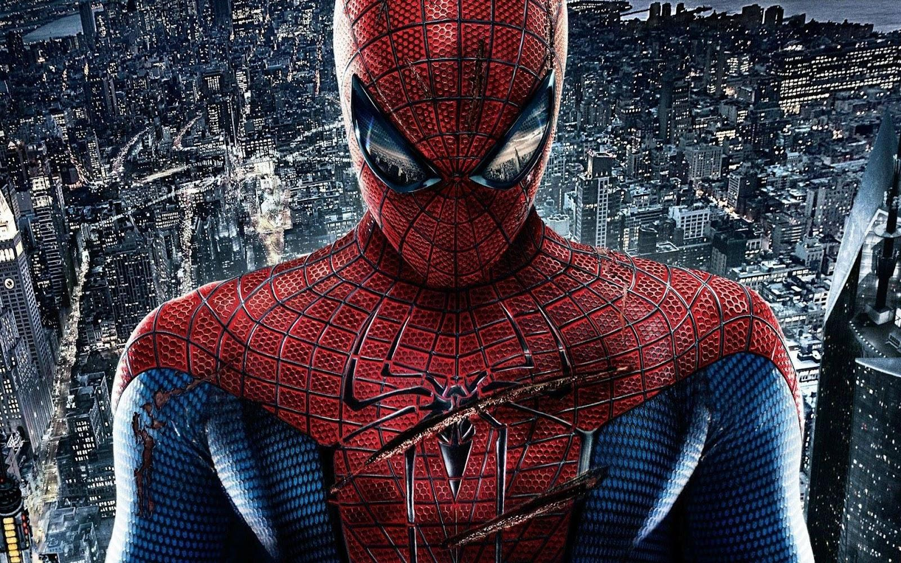

no total tem 10 filmes do homem aranha
Homem-Aranha é um super-herói das revistas em quadrinhos publicadas pela Marvel Comics que teve o enredo desenvolvido em dez filmes, sendo dois deles animações.
desses filmes tirando as animações temos três diferentes atores que interpretam o homem aranha
Uma vez que Peter Parker tinha 17 anos de idade quando se transformou no Homem-Aranha em 1962, isso indicaria que ele nasceu em 1945 e, se o tempo transcorresse no universo Marvel da mesma forma que na vida real, hoje o herói teria cerca de 70 anos de idade.
